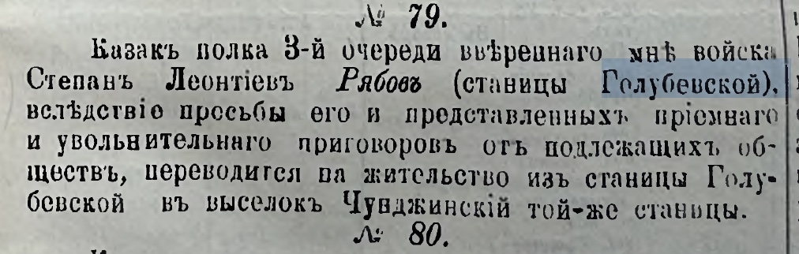

Zeitungsecke · 1900
Казак полка 3-й очереди Степан Леонтьев Рябов переводится на жительство из станицы Голубевской в выселок Чунджинский той же станицы. «Семиреченские ведомости», 1900 год.

«Семиреченские ведомости», 1900 г., № 79.
«№ 79. Казакъ полка 3-й очереди ввѣреннаго мнѣ войска Степанъ Леонтьевъ Рябовъ (станицы Голубевской), вслѣдствіе просьбы его и представленныхъ пріемнаго и увольнительнаго приговоровъ отъ подлежащихъ обществъ, переводится на жительство изъ станицы Голубевской въ выселокъ Чунджинскій той же станицы.»
Публикация: Никита Нэйтан Харченберг, форум ВГД, тема о станице Голубевской.